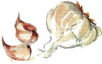
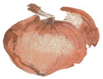

Is there a good natural remedy for high blood pressure? I spoke with several doctors and consulted my many books and files to come up with a meaningful response. Dr. Wayne Flicker from Sierra Madre sent me a thick wad of data from various sources, mostly medical journals. He pointed out that high blood pressure - referred to as hypertension - is a complex topic and that innumerable books have been written about lowering blood pressure. Dr. Flicker pointed out that the causes are many, and doctors simply don't always know what they are. Not a particularly encouraging finding, since high blood pressure (and the heart disease which inevitably proceeds from it) is given credit for killing more people each year than virtually all other natural causes of death (save cancer) combined. Its specific cause is ascertained in about 1 in 20 cases. Doctors refer to hypertension as "essential," which is medical jargon for "we don't know the cause."
Despite this, there is some concrete advice to be found, some dietary, some herbal.
For starters, if you are overweight, lose the excess weight. If you smoke, stop. Excessive alcohol consumption may elevate the blood pressure. Hypertensives should limit alcohol consumption to less than one ounce of ethanol daily. That means less than 8 ounces of wine or less than 24 ounces of beer. Even better is to eliminate alcohol from your life altogether.
In at least half of the cases of hypertension, the reduction of salt in the diet proved to be helpful. The elderly and African Americans are the most likely to benefit from restricted salt intake. Read the labels of foods, since you might be surprised to find out which foods are high in salt/sodium. A food is considered high in sodium if it contains over 250 milligrams of sodium per serving, and this includes most cheeses, sausage, Danish pastry, many salad dressings, many olives, bouillon, etc. Read those labels.
Though the above recommendations are considered some of the best ways to reduce high blood pressure, there has also been some consideration of including calcium, magnesium, potassium and fish oil in the diet.
In a variety of tests, garlic and onions (members of the allium family) have been shown to reduce cholesterol, high blood pressure and the incidence of flu.
For example, Alan Tsai, Ph.D. with the Michigan School of Health, has tested rats and humans for the effects of garlic on cholesterol levels. He fed test groups high cholesterol diets, with one group receiving garlic. Those who consumed garlic had cholesterol levels that rose about 4 percent, as opposed to those without garlic whose cholesterol levels rose 23 percent. Dr. Tsai noted that the incidence of cardiovascular and other diseases is lower in countries whose populations consume large amounts of garlic, though he was reluctant to attribute this effect solely to garlic.
Various studies reported in the Indian Journal of Nutrition and Dietetics concluded that both onions and garlic in the diet lowered blood cholesterol levels. Studies in Germany and in the United States have produced similar results.
Cholesterol builds up in fatty plaques on the artery walls, and so it is believed to be a major factor in the onset of heart disease. Anything that reduces high cholesterol levels helps to keep the heart healthy.
Dr. Truswell, professor at the Queen Elizabeth College of London University, conducted research by feeding human subjects high-fat meals with and without onions. He found that blood platelets stuck together faster after the high-fat, no-onion meal, whereas the effect was neutralized when onions were included. Platelets are a compound in the blood which is an important aid in coagulation, but when they "malfunction," they form clots which can lead to thromboses in the arteries to the heart and brain, which can result in strokes and heart attacks. Dr. Truswell believes that by simply including onions in the diet, the chances of having a stroke or heart attack are reduced.
Though there are countless studies pertaining to the effects of garlic and onions on the human body, it may still be some time before doctors make conclusive statements. Again, this is due to the complexity of high blood pressure, its various causes, and the fact that no two people are alike. Still, I eat garlic every day. Russian folk healers and herbalists the world over have been suggesting that garlic be used to reduce high blood pressure and a host of ailments for centuries.
We do know that garlic contains small amounts of selenium and germanium. Selenium is believed to prevent abnormal blood clotting, to normalize blood pressure, and to prevent infections. Germanium is being investigated for its reputed ability to retard or prevent the growth of some cancers. Garlic also contains a number of biochemical compounds, such as allicin (considered to have antifungal and antibiotic properties), alliinase, allyls, allithiamine (this makes vitamin B1 more effective), and alliin (this makes proteins easier to digest). Allicin, left alone, turns into a substance that some researchers have called "ajoene," believed to be responsible for garlic' s ability to inhibit blood clotting as effectively as aspirin.
Enough books and research papers have been written about garlic, onions, shallots, leeks and that entire Allium genus to fill a small library. There are two other good sources of herbal information which I want to share.
Herbalist Michael Moore has written several good books on medicinal plants. In his book, Medicinal Plants of the Pacific West (Red Crane Books, 1993), he lists Hawthorn (Craetaegus Douglasii and C. columbiana) as beneficial in cases of hypertension. He writes, "Hawthorn is a heart tonic - period. First of all, it is a mild coronary vasodilator, increasing the blood supply to the heart muscles and lessening the potential for spasms, angina, and shortness of breath in middle-aged or older individuals ... I have seen it help the middle-aged mesomorph, with moderate essential hypertension, whose pulse and pressure are slow to return to normal after moderate exertion and whose long, tiring days leave the pulse rapid in the evening. It will gradually help to lower the diastolic pressure and quiet the pulse ... The benefits take weeks or even months to be felt, but are well maintained, not temporary."
In the "preparation" section, he describes using the flowering tops or berries of hawthorn, made into an infusion and drunk three times a day.
In Moore's Medicinal Plants of the Mountain West (Museum of New Mexico Press, 1979), he describes an herb found in China called Ligusticum wallichii which is used clinically for lowering blood pressure. He only describes this herb in passing, since his main discussion was about a related Western U.S. herb named Osha (Ligusticum porteri); he says the Chinese relative is nearly identical to Osha.
Over the years, I also have found useful information in a book by Alma Hutchens, Indian Herbalogy of North America (Random House, 1991).
Among her references to high blood pressure, she includes black cohosh (Cimicifuga racemosa). The root is made into a tincture which is used alone or mixed with other herbs to treat high blood pressure.
She also states that in Russian folk medicine, "they have found that corn oil is prophylactic for high blood pressure." Though she provides no more details, it is presumed that these benefits are derived by consuming the corn oil with salads or other foods.
Hutchens includes onions on her list of herbs used for high blood pressure, citing as her source the Atlas Lekarstvennych Rastenia U.S.S.R. (Atlas of Medical Plants of the U.S.S.R.).
Remedies for high blood pressure
Cooking with garlic for good health
*The dietary and herbal information provided above are to be considered general information, but due to the chemical differences among human bodies, there is no way that this general information can substitute for talking face to face with a doctor who can interview you and consider your particular situation.
|
 BARI GOODMAN LLOYD Garlic and other alliums have been shown to help lower high blood pressure and improve cholesterol. |
 BARI GOODMAN LLOYD Onions, shallots and other alliums work, too. Add them to meals for flavor and good health! |
|